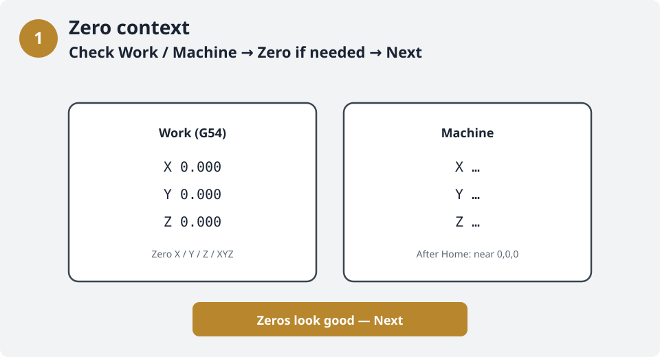
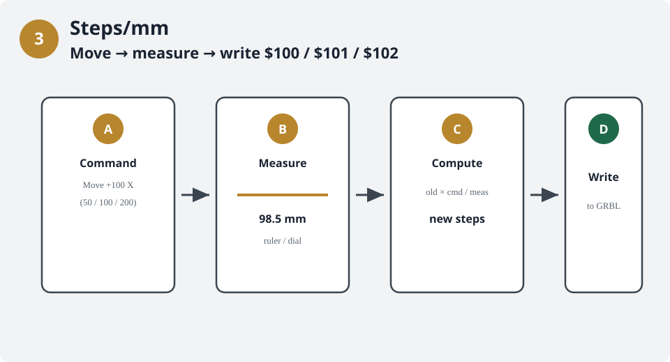

Once per machine · Menu → Calibration…
Calibration
Teach SharpCNC how your machine moves — direction, distance, and safe travel. Do this before Prepare or cuts. Repeat only after wiring, screws, or bed size change. Clear bed. Keep Z high for XY. E-Stop ready.

Expect: +X right · +Y back · +Z up (looking down on bed)
Next: Steps/mm →
Repeat X → Y → Z. Formula: old × commanded ÷ measured.
Next: Soft travel →
Machine phase done. Next job: connect / home as needed → Prepare (stock, zeros, Z probe) → cut. Manual $$ is wizard step 5 if you need a one-off setting.
Done · per-job prepare →